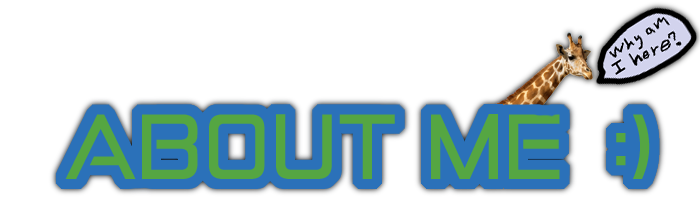

|
There we go. Took a bit of css and image editing to get that transition but now its nice and sleek. No complex image textures or nothin. I mean, not that I don't like that stuff. I just don't have any ideas for that yet I guess. Well as long as we're changing things in like, a dynamically narrative fashion where I gradually change the scenery to match my current preferences, which actually ends up being a lot more effort in the long run than if I just started out with everything the way I wanted, I might as well change the background too so it actually fits with this new text box thing. Hmm. Maybe like, a picture of space? That might be too generic though. Now that I think about it, this text is kind of hard to read. The contrast between complete white and black is just too much. Wait instead of changing the background color again which is kind of difficult, I could just
do this. Wait it didn't work. Hold on.
There we go. This is so much easier to read on this background. Hold on hold on I think I've got an even better color scheme dealy thingy. I'll have
to change a lot, including the background, but I think it just might work...
How's this? Wow, okay. Maybe the text is a bit dark, but other than that I think this is okayish? Like the font is still meh but I don't know what to change it to. Like, this looks cool? but it seems a little dark and weird for an about me page don't you think? Nothing wrong with
dark and weird styles of course, but I don't think this fits what I'm going for. Actually you know what, after writing a bit of text in this
style, I don't think it's that bad. It kind of does fit in a way, assuming you can read this darkish text. I think the font is still a little too bold though. Like, I don't think I would mind Verdana (which is what this font is), but it just looks too thin without bold. I need like, a semibold version. You know what, maybe this isn't too bad. Wow, I just spent like 30 minutes trying to get
this other font to work but for some reason it just decided not to work for whatever reason. Great. UHHgfgg. WAIT! THAT
ACTUALLY WORKED. Okay so what I did was I put the .ttf font file in an online .ttf to .woff converter, and now the font file works! I hypothesized
that by putting it through a converter, any weird data that might be causing it not to work would be ignored, so it would get fixed when it got converted.
I guess I was right. Woohoo! Yeah wow this looks muuuuch better. Now to take a break.
About Me. For the Totes Realzies this Time.
Instead of listing a variety of activities that I have participated in while narratively intertwining the significant events that I have experienced over the past arbitrarily decided number of years, I'll do my best to give an explanation as to how I function as a person. That way, this really is about ME and not about the things AROUND me. Also, it means that it will be more unlikely that I'll have to rewrite this to conform to any emerging circumstances. Thankfully, I'm pretty simple, all things considered. Okay, not really I guess. To start, mostly, I like giving people, including myself, things that lead to changing their logical system of deduction of reality, if that makes sense. Like, I like giving stuff that, when it gets incorporated into the person's system of understanding reality simply due to it's nature self presentation, it forces the person to change or consider changing that very system of understanding. For example, if a person's system of understanding reality was structured so that they thought, or rather, would end up thinking if put in a particular circumstance, or maybe even would just naturally and automatically not think otherwise, that squares always have exactly 4 sides. I would love to give this person something that would force them to at least consider changing that, such as giving them an example of a square with 5 sides, or coming up with and showing them a logical system that allowed for squares to have any number of sides. I would probably start the conversation with them like, "Did know squares can actually have 5 sides?" with no prior context. I would probably do this, because one of the main ways you can change someone's system for comprehending reality is to show them something is possible. That doesn't mean that they would have to think it was impossible on like, a regular and active basis, but just that they may not even consider the possibility or lack of possibility of that something to exist in the first place without it being shown to them explicitly. In other words, one of the primary ways you can change someone's system for comprehending reality is by showing them a possibility that they have not even considered. Starting off a conversation with, "Did know squares can actually have 5 sides?" with no prior context is something that doesn't happen often, and thus, it would come unexpected, and the fact that it comes unexpected is a result of the fact that the person hearing the words had not even considered that those words would happen at that moment for any reason, thus forcing the person to consider changing their system of understanding reality to better categorize and incorporate this unexpected event so that it 'makes sense'.
This should explain why I am the type of person who likes to think a lot. Because I like to show myself new possibilities to change my own system for understanding reality, I like to constantly sit and think of possibilities and ideas that do just that. Of course, I don't just want to change that system just for the sake of changing it. I use this ability to recognize where changes could be made to better my life and happiness in whatever way I think is best. I can get into trouble though if I start to limit my own reality understanding changes for fear of changing other people's reality understanding system into something I don't think is best for them or me (basically putting other people before me to an unhealthy extent), but I try to work on that whenever possible. I'm still not perfect at balancing giving me what I would benefit from with giving others what I think they would benefit from, but I would say I have improved. It mostly comes down to having the courage to walk away from talking to or hanging out with people to have time to myself so I can do my thinking thing.
Woohoo. And I explained all of that without using any personality categorization things like MBTI.
This should explain why I am the type of person who likes to think a lot. Because I like to show myself new possibilities to change my own system for understanding reality, I like to constantly sit and think of possibilities and ideas that do just that. Of course, I don't just want to change that system just for the sake of changing it. I use this ability to recognize where changes could be made to better my life and happiness in whatever way I think is best. I can get into trouble though if I start to limit my own reality understanding changes for fear of changing other people's reality understanding system into something I don't think is best for them or me (basically putting other people before me to an unhealthy extent), but I try to work on that whenever possible. I'm still not perfect at balancing giving me what I would benefit from with giving others what I think they would benefit from, but I would say I have improved. It mostly comes down to having the courage to walk away from talking to or hanging out with people to have time to myself so I can do my thinking thing.
Woohoo. And I explained all of that without using any personality categorization things like MBTI.